← 返回阅读库 · 原论文目录
论文讲解阅读文档 · 多模态语言模型 · v046
Socratic Models Zero-Shot Multimodal Reasoning[2204.00598]
视频时长 00:11:31；讲解文字 4,984 字符；提取讲解画面 27 张。按视频原顺序阅读，每段文字保留时间戳。
文字来自整段视频的自动语音转写，按自然停顿分段，并与 PPT / 论文页面 / 演示画面对齐。未将讲解压缩为摘要；术语、数字和口述公式请结合画面及原论文核对。 阅读稿已校正规范部分明确术语误识别；原始逐字稿和每处修改记录另行保留。
讲解画面为源视频截图（640×360），不是可编辑 PPT 文件。全片按每秒 2 帧扫描内容变化，逐步展开页保留；连续动画保留代表画面。清晰度受源视频限制。
下载完整资料包 · 含离线 HTML、PDF、Word、全部 PPT 画面和字幕。
原论文与材料
Socratic Models: Composing Zero-Shot Multimodal Reasoning with Language · 下载完整 PDF（30 页）
按时间阅读
00:00:00–00:00:46 · 画面 001
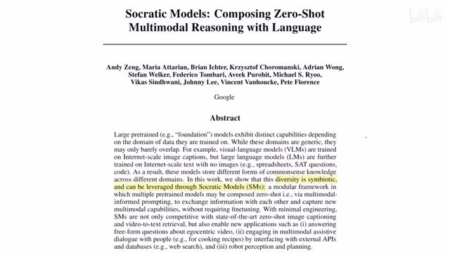
00:00:00–00:00:46 · 画面 001大家好啊，今天我们来快速数一篇论文，Socratic ModelsComposing Zero-shot Multimodal Reasoning with Language。那这篇论文呢，来自 Google，第一作者是这个 Andy，他是一个很 nice 的人，之前在这个 CVPR 还有 RSS 他都讲过这篇工作。然后呢，在 RSS 我们还碰了一面，很不错的一个人，你包括翻他之前的工作都是很有意思的。你如果做这个 Robot Learning 这一块呢，非常推荐你关注一下这个人。
那么当然了，这个作者列表里面还有 Michael 和 Pete 这两位，我们在这个 CVPR 的这个 workshop 里面也见到了。之前的这个 Token Learner 还有那个 Evolving Losses 都是这个 Michael。那么当然，Pete 还有很多知名的作品啊，反正都是这个领域里面很有意思的一些人啊。
00:00:46–00:01:35 · 画面 002
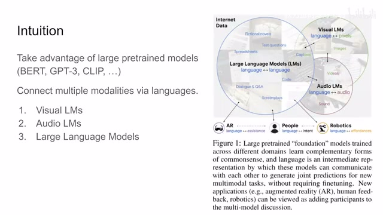
00:00:46–00:01:35 · 画面 002那我们直接来看这篇论文，这篇论文的核心呢，就是希望我们把一些已经存在的预训练的一些大的模型呢，给它整合起来。那么这些模型呢，往往来自很多个模态，比如说这个 clip，那么这个是 video 或者 visual 它和 language 的关系。那当然呢，你也可以把这个 audio 和这个 language 联合起来对吧，我们有这样的相关的模型。那同时呢，还有这些大的语言模型，GPT ，BERT 对吧，这些等等等等。那么本文的核心的这个思想呢，就是把我们这些多个模态的这些东西呢，通过语言作为一种纽带把它们联系起来。
就是我不管你看到的是什么东西，我不管你听到的是什么东西，我都把它描述成文字，然后把它统一成文字之后呢，我们就可以在这几个模型之间，他们相互搞来搞去，他们相互之间就可以传递信息了。那么在这篇文章里呢，就是说我想要找到一个好的这个 task 或者叫其实就是一个映射嘛，一个 mapping，它呢把 X 投到 Y，那这个 X 和 Y 呢，它们可能是包含了多种模态的。
00:01:35–00:02:38 · 画面 003
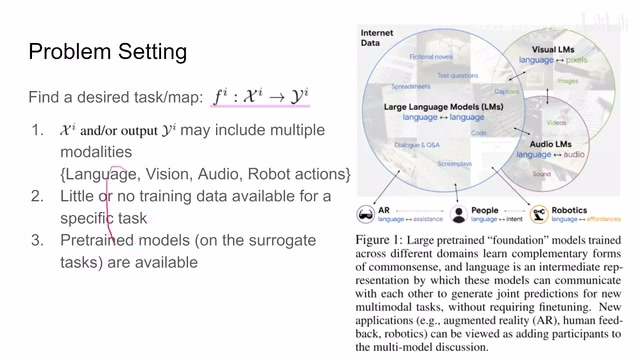
00:01:35–00:02:38 · 画面 003比如说这里他做了列举的像语言，视觉，听觉，声音的信号，还有具体的 robot action，因为 Andy 之前做的是 robotic，所以他很在意 robot action。那么对于这种特定的任务，有时我们很难收集甚至就根本没有这种训练数据，我们是不好去训练的。但是好在我们还有一些东西有什么呢就是这个 Pretrained Models 比如说这个 Clip 它是这个 Contrastive Learning 学一个这个文本和这个图像的配对那这个 BERT 它是一个 Question and Answering 等等等等这样陪训好这些模型那么虽然这些模型在训练的时候它具体使用的这个训练任务肯定不是我们想要做的现在这个任务
但是我们可以用一些方法把这些训练的结果给它 transfer 到我们想要的任务上来，这个就是这篇文章的一个核心的思想，而 transfer 实现连接的关键就是我们的自然语言。那么我们具体来看这里，就是作者提出的苏格拉底式的模型，它其实就是这么一个学习的框架，就是用 prompting 这个手段把我们各个模态的这些预训练好的模型给它粘在一起了。
00:02:38–00:02:39 · 画面 004
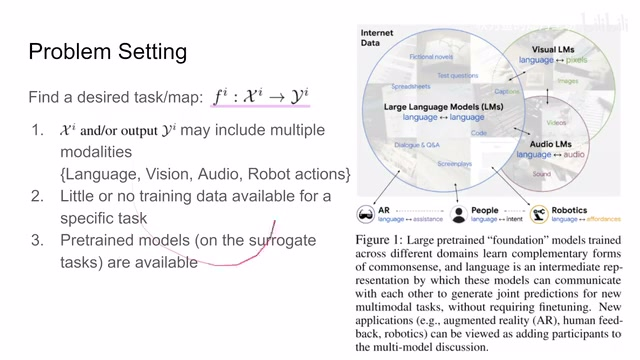
00:02:38–00:02:39 · 画面 00400:02:39–00:02:45 · 画面 005
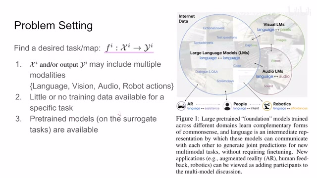
00:02:39–00:02:45 · 画面 00500:02:45–00:03:50 · 画面 006
00:02:45–00:03:50 · 画面 006那比如说这里举个例子来说，我们想做这个 video activity 视频的动作的这个识别，那我们要怎么做呢？那这里按照作者的说法，首先我们要有这个 visual language model，那这里呢，我们看到啊，这个模型告诉我们啊，我现在在一个楼梯间里，我看到了这个楼梯啊，看到一些动物。读入动物仓鼠人腿那么像动物这些东西呢就是视觉上误报了那么这个是第一步那其实这里呢你不要被它这个 Visual Language Model 给它骗了它其实就是一个比如说这个 Object Detection 那么它输出来的就是这个绿色这个字符我们呢只不过是把它填到了这个模板里面就是比如说这里有个关键词是场景我把这个关键词填一下然后这里是我检测到的物体我把这个关键词填一下
是通过这种手段把我们检测出来的一个个的这个关键词变成一句话的，它其实就是填一个母版。所以这个 VLM 这个 Visual Language Model，它本质上就是一个 Object Detector。那么有了这样一句话之后呢，就是这里这一话之后呢，我们把它放到这个 Language Model 里面。
00:03:50–00:03:51 · 画面 007
00:03:50–00:03:51 · 画面 00700:03:51–00:03:56 · 画面 008
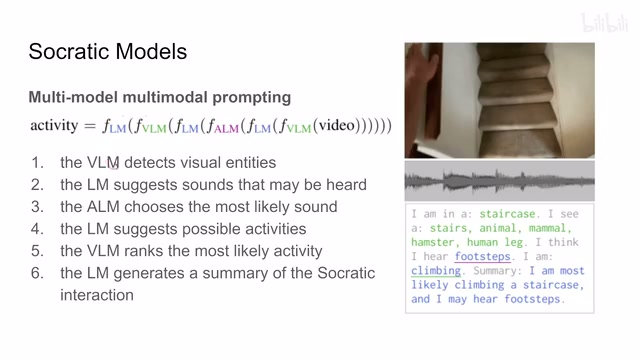
00:03:51–00:03:56 · 画面 00800:03:56–00:03:57 · 画面 009
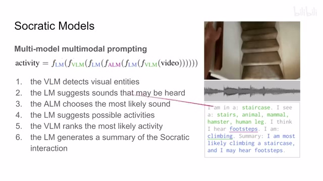
00:03:56–00:03:57 · 画面 00900:03:57–00:04:18 · 画面 010
00:03:57–00:04:18 · 画面 010OK，我现在在什么样的场景里面，我看到什么东西，然后让这个 language model 告诉我，我可能听见什么东西呢？那么这个 language model 可能会给我们建议一些声音。这个时候呢，我们把我们的这个 audio 这个 model 再引进来，让我们的 audio 这个 detection 去看一眼这个场景中我到底听到了什么声音。我 audio 的这个结果跟我们预测这个 language model 算一个这个 similarity，我们就可以选出一个我们听到了最有可能的声音。
00:04:18–00:04:41 · 画面 011
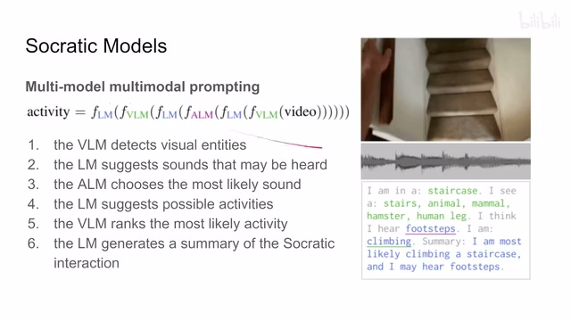
00:04:18–00:04:41 · 画面 011就相当于这个 language model 给我们几种建议，我可能听到什么东西，然后我们去查它跟实际的这个 audio 的这个 representation 的相似程度，就跟 clip 一样对吧，就可以查出这个相似程度来。比如说这里，然后我听到了这个脚步声对吧，同样的我也跟上面这个 visual 的这个结果一样，我也是弄一个模板，我把这个探测出来的这个结果这个脚步声我把它塞到这个模板里面变成这样一句话。
00:04:41–00:04:46 · 画面 012
00:04:41–00:04:46 · 画面 01200:04:46–00:05:28 · 画面 013
00:04:46–00:05:28 · 画面 013然后呢，根据我们的这个 visual 还有我们听到的声音对吧，这些信息都现在都在这一句话里面，到这里结束啊。我把这个东西征给我们的这个 language model，让他告诉我说啊，基于上面这些信息，你告诉我我在干啥呢？那么我们的这个这部 language model 就告诉我们啊，我可能是在爬楼梯啊，或者干其他什么活动。那么在这里拿到这个结果之后呢，我们再结合我们的这个 visual 这个 model 就是视觉上。
我再去跟我们的推测出来的这个活动来进行一个对照，那最终我们确定说我们确实是在这个爬楼梯。
00:05:28–00:05:32 · 画面 014
00:05:28–00:05:32 · 画面 014那么然后我们把所有的这些结果就是从开始到这里这些语言的信息扔给我们这个 language model，让 language model 总结一下发生了什么事情。那么它的总结就是我可能正在爬一个楼梯，然后我听到了脚步声。这个就是一个很典型的苏格拉底式模型的本文的方法的这么一个推测的流程。你可以看到它就是不断用这个 prompting 把我们不同的模态的检测的结果。
00:05:32–00:05:37 · 画面 015
00:05:32–00:05:37 · 画面 01500:05:37–00:05:47 · 画面 016
00:05:37–00:05:47 · 画面 01600:05:47–00:05:49 · 画面 017
00:05:47–00:05:49 · 画面 01700:05:49–00:06:10 · 画面 018
00:05:49–00:06:10 · 画面 018套到一个固定的模板里面形成一整句话，然后交给我们的这个 language model，还是像我们之前说的用语言呢，把所有的东西都给它粘起来。那么下面我们来看作者汇报了一些具体的这个 benchmark，比如说像这个 image caption。
00:06:10–00:07:15 · 画面 019
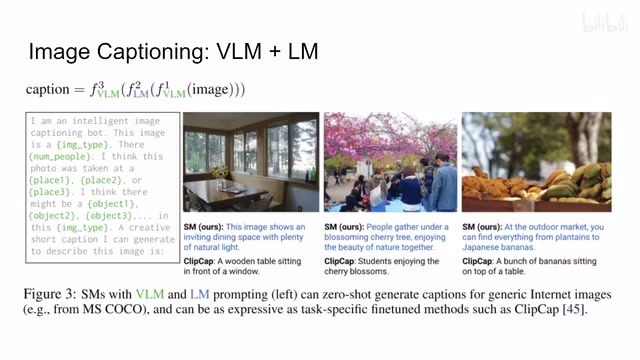
00:06:10–00:07:15 · 画面 019这里呢，就是我先是图线进来，我的这个 visual model 检测一下我的图像里面，比如说这是一个什么样的图片，有多少人在图片里面，它可能在什么地方拍摄的对吧？然后呢，我检测到图中哪些物体，然后呢，把这些所有的假设这些一句话嘛对吧，把这些检测的结果填到这些模板里面。同时呢，这里加上一句话也就是 property 嘛，来引导我们的这个 language model 来总结一下当前这个图片里面发生的内容。
然后呢，我们的这个 language model 给出一个结果嘛，那当然这个结果包括很多种可能啊，就是它会给我们很多个候选，然后我们去选像素度最高的那一个，就是我们最终形成的这个。对这个图像的这个描述。那当然他在具体数据集上的结果包括他具体做实验的这个过程呢，感兴趣的朋友呢请看他这个这个实验的原文，特别是在这个附录里面。那么因为全文有 30 页啊，他为了投这个 New York 不得不给他砍上了 8 页啊，还是所有所以所有的东西都进到附录里面了。那么我们继续往下看，当然作者还汇报了其他的 benchmark，比如说这个 image description 基于这个上下文的 image description 就是在文章里面。
00:07:15–00:07:44 · 画面 020
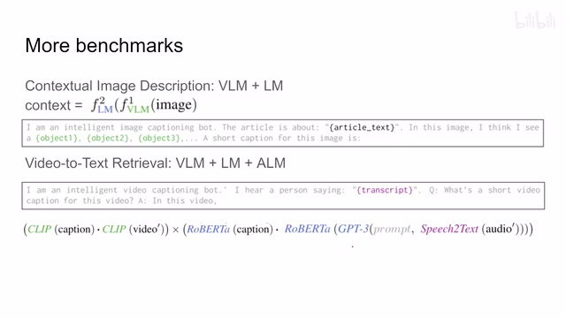
00:07:15–00:07:44 · 画面 020我配了一个图，然后给这个图加描述或者是加一个 caption。那还有这个 video to text retrieval，那这些东西感兴趣的朋友呢可以到这个原文中查看。那么当然，以上说的这些呢都是我们之前已经广为定义好的这些任务，很常见的一些任务，我们都可以用有监督的方法来做的。
00:07:44–00:08:33 · 画面 021
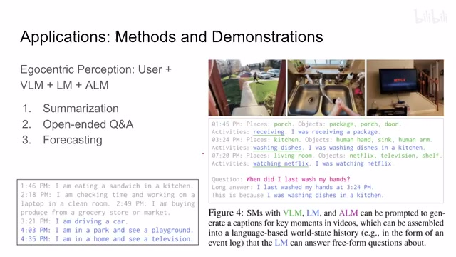
00:07:44–00:08:33 · 画面 021那么下面这些应用呢就是作者向我们展示了一些实际的应用中我们可能没有这么好的这个样本甚至没法收集样本那这种情况下作者怎么样去用预训链的模型把这个事情给它搞定那比如说这个 Egocentric Perception 就是第一人称视角的这个录像然后根据这个录像我们能干什么呢首先能够总结一下发生了什么事情同时呢做这个问答那最后呢甚至它可以预测一下我们将要发生的什么事情那比如说这里这个 1 点 45 分的时候，在这个门廊这里，我们检测到了这个门廊，我们检测到了这个 package 这个包裹，门廊还有这个检测到这个门。那么现在我把它塞成一句话，交给我们的这个 language model。
language model 来告诉我们，我们可能在干什么对不对？然后告诉我们一个结果，再跟这个视觉一起检查一下，我可能在这个收入一个包裹对吧？那么这个是这样的。那同样的不同的时刻对吧，这些东西。那么然后呢，根据这些所有的这些总结对吧，我们就可以把它合成一整段话，扔给我们这个 language model，然后问我们的 model 对吧，我上次洗手是在什么时候啊对吧？等等等等这些问题啊，你都可以做。
00:08:33–00:08:34 · 画面 022
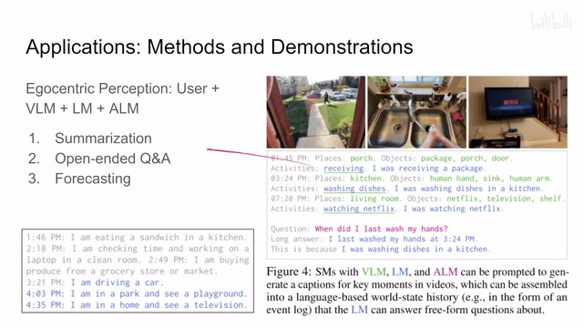
00:08:33–00:08:34 · 画面 02200:08:34–00:09:12 · 画面 023
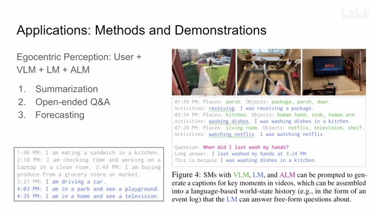
00:08:34–00:09:12 · 画面 023甚至预测一下未来一段时间我要干什么，我要在哪看到什么对吧？等等这些任务呢，你想怎么收集数据集吗？对吧，没法收集数据。那么他通过这个陪顺好的模型相互的问来问去对吧，就可以得到一个令人满意的结果。这个是一个例子。那么第二个例子呢，就是这个多模态的这个有协助性的这个对话，简单来说呢就是。
00:09:12–00:10:14 · 画面 024
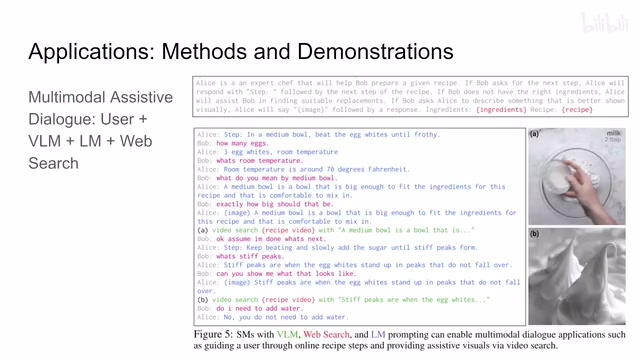
00:09:12–00:10:14 · 画面 024比如说我在做饭，我要做菜，然后我随着做，随着操作对吧？我要随着检查菜谱。Alice 就是一个主厨来告诉我们怎么做，Bob 就是我们实际操作这个人，他随着操作，他可能会有问题，他就是我们的用户的输入。那么这些都是 language model 可以处理的。那么当然，这里演示的是基于网络搜索，你可以根据用户的输入，用户提了一个问题之后对吧，然后你根据他的输入。
去搜索相应的这个图像和这个视频对吧，来返回给用户。那这些应用呢，就是向我们展示了我们可以很轻松的把这些语言啊还有这个视觉处理的结果接入到不同的这个下游的任务里面，用语言来驱动，把所有的模型呢都粘在一起。那当然呢，语言也是一个非常自然的机器和人的交互的方式，你就直接告诉机器你想要什么就好了。所以从这个角度来看，这是一个很有前景的应用。那么当然，最后呢还有这个机器的操作。
00:10:14–00:10:50 · 画面 025
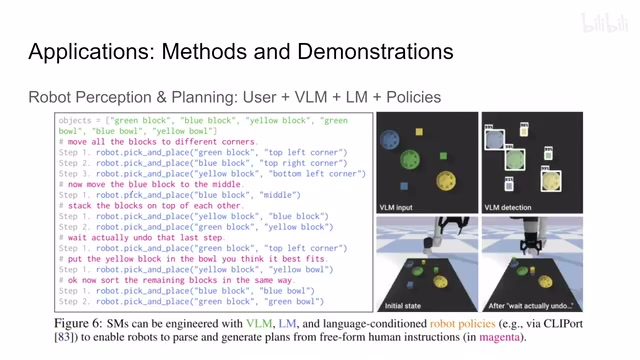
00:10:14–00:10:50 · 画面 025就是我们有一个 Visual Detector，告诉我们这个视野中首先有什么东西，然后用户给我们一个输入，然后输入这个用户告诉我们想干什么，我们的 Language Model 呢就产生具体的机器的操作的步骤，交给我们的这个机器人去执行就好了。那这个演示呢，也是 Andy 他一直在这个 Workshop 还有这个各种 Tutorial 做的，在这个 Language Model 的这个加持下呢，效果呢也是非常的惊人。
感兴趣的朋友非常推荐你去查看它的代码，然后它的 Colab 的代码你可以玩一玩。
00:10:50–00:11:30 · 画面 026
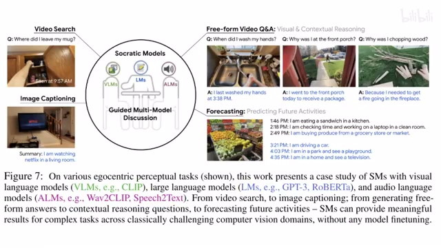
00:10:50–00:11:30 · 画面 026那么总的来说，这个本文提出的这个苏格拉底式的这个模型，它本质上就是通过语言这个方式，把我们的所有的视觉的模型，语言的模型还有这个听觉的模型给它粘在一起，然后去做很多我们不好收集数据的这些任务。首先本身是一个很有意思的工作。那当然，你想自然语言它固然有自己的好处嘛，很容易跟人交流，同时呢它很多情况下也是不那么准确。具有二一性，会忽略很多的细节。那么当然这些都是未来非常有意思的研究方向。好的，那么以上就是我对这篇文章一个快速的介绍。那么感兴趣的朋友呢，还是非常推荐你到原文查看这篇工作。那么感谢您的收看，再见。
00:11:30–00:11:31 · 画面 027
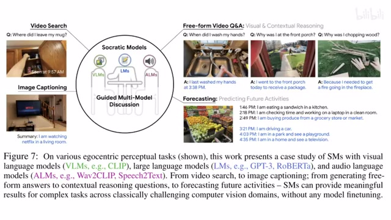
00:11:30–00:11:31 · 画面 027转写与来源说明 · 0 个自动复核提示
保留 31 个原始语音片段，0 个片段触发自动复核提示。提示仅用于定位可能的术语、重复或识别问题，不等于已确认错误。
讲解画面为源视频截图（640×360），不是可编辑 PPT 文件。全片按每秒 2 帧扫描内容变化，逐步展开页保留；连续动画保留代表画面。清晰度受源视频限制。
原视频：paper/合集_2026-10-16_多模态语言模型/[论文速览]Socratic Models Zero-Shot Multimodal Reasoning[2204.00598].mp4
SHA-256：d6bc601d558d51fc54374b46b14abc0ccd124141338b9070825d736082d26f72
全文按视频语音与画面制作。原论文可从上方链接下载；完整资料包保留全文、原始逐字稿、字幕和校对记录。